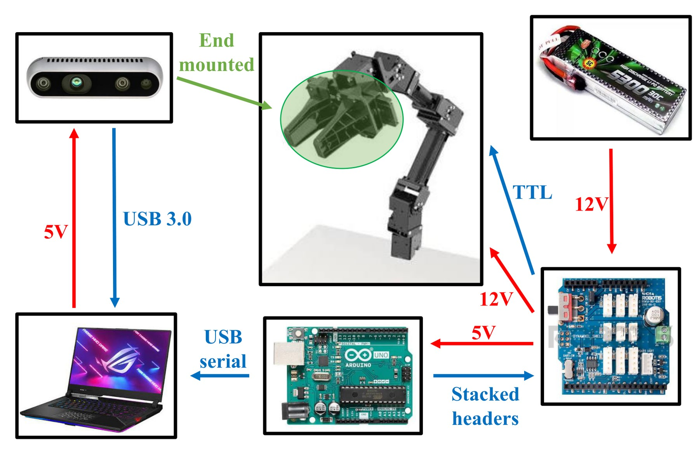
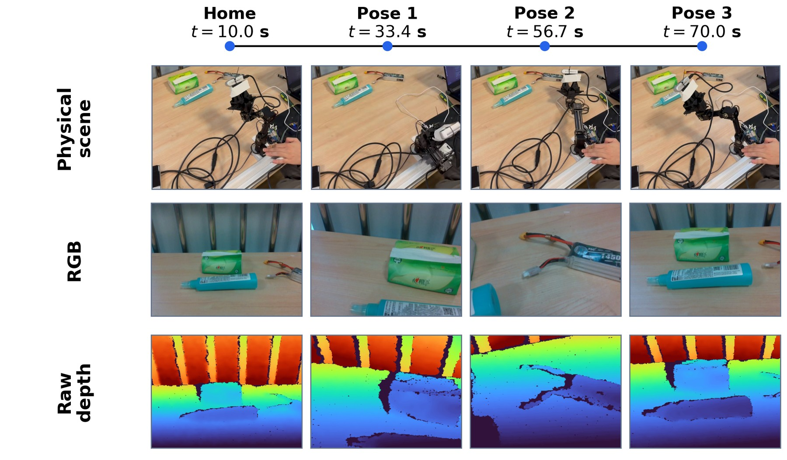
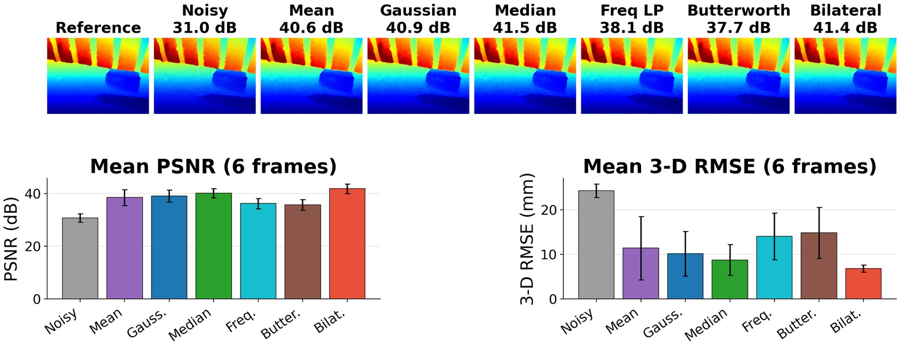

Depth-Map Denoising and Restoration for RGB-D 3-D Reconstruction and Tracking
DISP Final Project, Technion
Author: Chuhan ZHANG
Consumer RGB-D depth maps are noisy and incomplete, which hurts both dense reconstruction and camera tracking. I built a full pipeline on an Intel RealSense D435 mounted on an OpenManipulator-X robot arm, compared six classical depth filters, and measured how the 2-D restoration ranking affects 3-D fusion and pose accuracy.
What I Did
- Hardware platform: Mounted a RealSense D435 (640×480 @ 30 Hz, SDK post-processing off) on an OpenManipulator-X arm; separated motor/sensor power and wired Arduino + DYNAMIXEL control.
- Scan execution: Planned task-space trajectories, ran inverse kinematics at 20 Hz, and used calibrated MuJoCo forward kinematics as the motion reference.
- Dataset: Captured a 70 s robot-arm sequence (1798 RGB-D frames) of a desktop battery scene, plus auxiliary scenes for generalization checks.
- Sensor noise model: Verified depth-dependent noise σ(Z)=σ₀+αZ on a static countdown segment; measured std rising from ~3 mm at 0.85 m to 13.5 mm at 1.55 m (linear fit R²=0.98), fixing the study operating point near σ₀≈18 mm.
- 2-D restoration: Implemented and compared mean, Gaussian, median, frequency-domain Gaussian / Butterworth low-pass, and bilateral filtering under multiple noise levels, noise types, and missing-data conditions.
- 3-D & tracking: Back-projected restored depth, ran ICP + TSDF fusion, and evaluated tracking drift (ATE/RPE) against an oracle trajectory and arm forward kinematics.
Key Results
- At the D435 operating point, bilateral filtering is the best default 2-D restoration (multi-frame PSNR 41.9±1.8 dB, ~94% edge retention); median wins under impulse noise, mean under speckle.
- Hole-filling + bilateral recovers maps with ~16% missing pixels (PSNR 11.9 → 37.8 dB).
- Tracking: bilateral gives the lowest RPE under Gaussian noise; median is best under salt-and-pepper and speckle.
Figures



Stack
Python · OpenCV / NumPy · pyrealsense2 · Open3D · MuJoCo · OpenManipulator-X · Intel RealSense D435